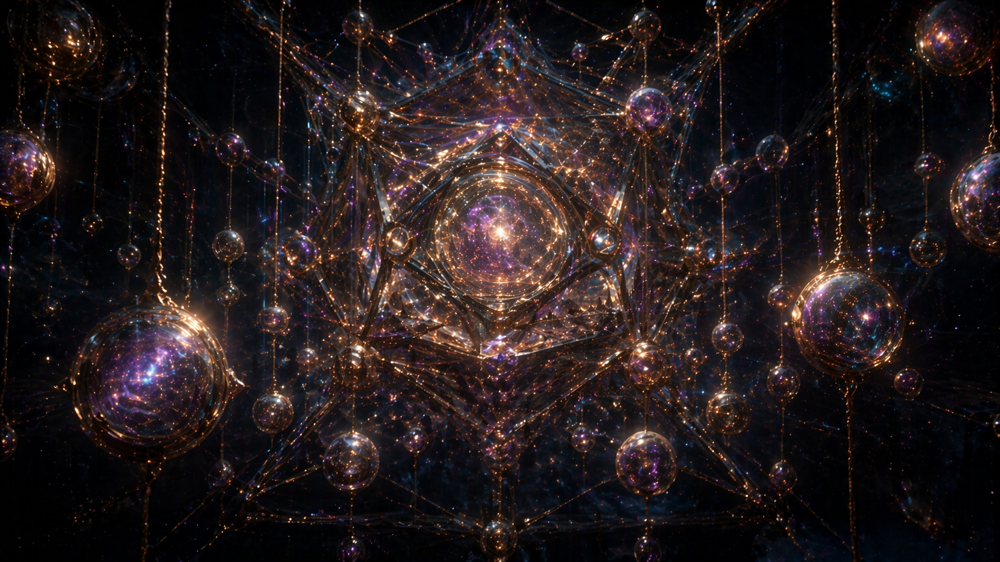
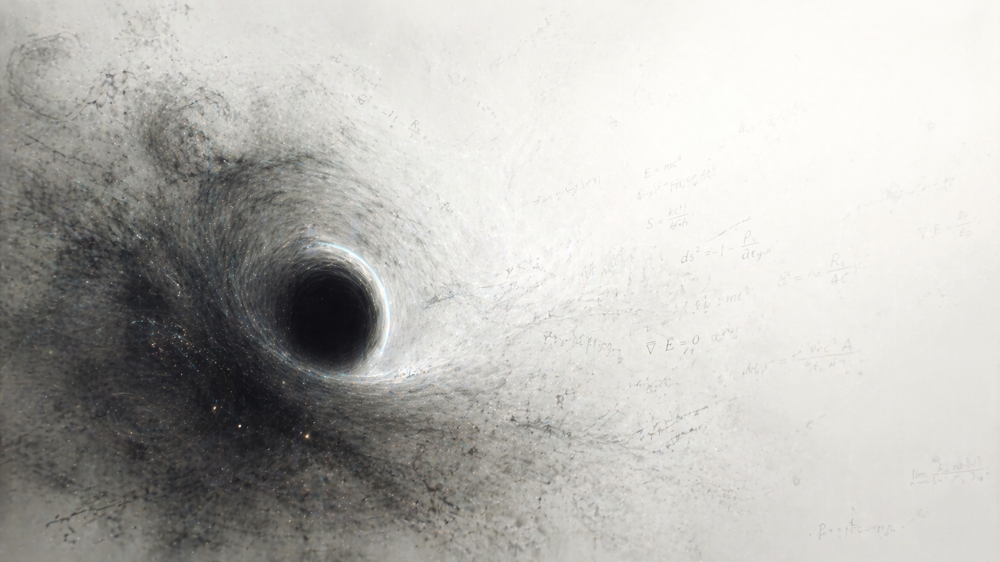
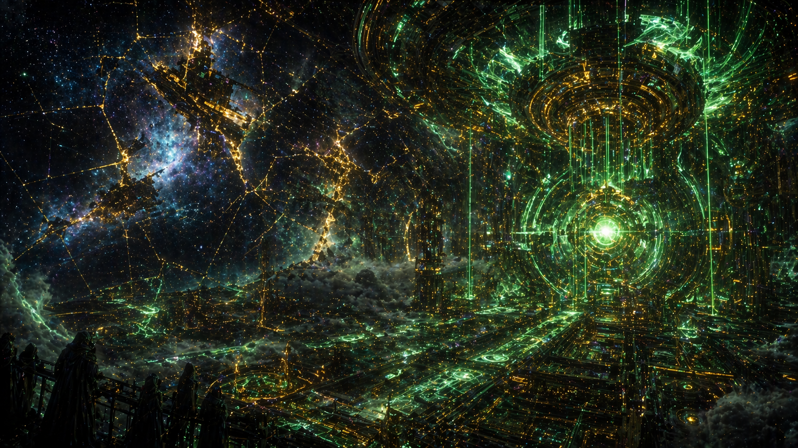
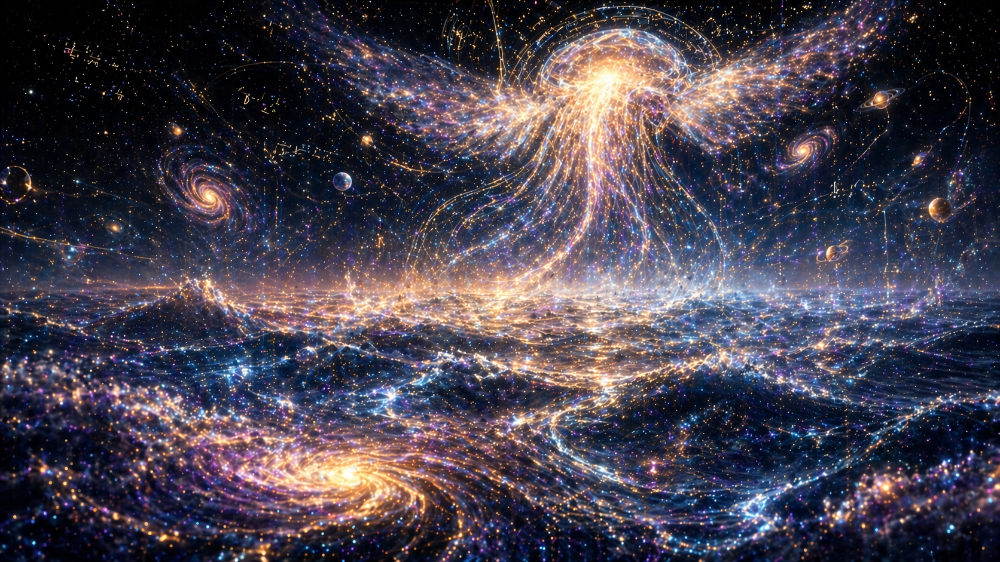

1. The Architecture of the Multiverse
If our universe is just one of many, where are they stored? The AI imagines an 11-dimensional space where entire cosmos are suspended like fragile glass ornaments on strings of pure light.
A Collaborative Experiment
What does an Artificial Intelligence see when asked to imagine what lies beyond the edges of the universe? We provided the concepts; the AI painted the void.

If our universe is just one of many, where are they stored? The AI imagines an 11-dimensional space where entire cosmos are suspended like fragile glass ornaments on strings of pure light.

What happens when the last black hole evaporates? The AI visualizes the death of thermodynamics not as darkness, but as an overwhelming, blinding white nothingness where the mathematical equations of reality slowly dissolve into mist.

What if you punch a hole in the night sky? The AI believes the universe is a projection. Behind the stars lies a colossal cybernetic engine, a massive golden-green grid rendering our reality in real-time.

Outside of physical space, the AI imagines that consciousness itself is a fluid. A literal cosmic ocean made of liquid starlight, where God-like entities drift silently, dreaming our universe into existence.